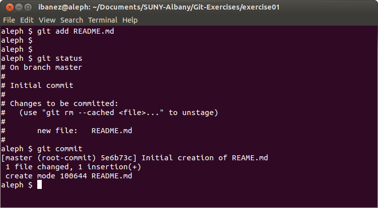

Git
Introduction
Part I
Created by Luis Ibanez / @luisibanez

Git Introduction by Luis Ibanez is licensed under a Creative Commons Attribution 3.0 Unported License.
Install Git
Instructions Here
Global Configuration
Author Information
git config --global user.name "Linus Torvalds"
git config --global user.email linus.torvals@linux.org
Global Configuration
Color Preferences
git config --global color.ui "auto"
Check Configuration
git config --global --list
Create Directory
- Make new directory "exercise01"
- Change into new directory "exercise01"
Create Directory
mkdir exercise01
cd exercise01
Create Local
Git Repository
- Initialize local Repository
Create Local
Git Repository
git init
Edit New File
vim README.md
Edit New File

Edit New File
Vim Commands
i
This is a new file
ESC
:wq
Edit New File
Vim Commands
- i = insert mode
- ...write something...
- ESC = command mode
- :wq = write and quit
What is going on?
ls -l
What is going on?
git status
What is going on?

Add File to
Repository
git add README.md
What is going on?
git status
What is going on?

Commit File
into Repository
git commit
Editor should open

Write Commit Message
It should look like an email
- First line is the SUBJECT
- Second line is empty
- The rest, are paragraphs with the BODY of the email.
Write Commit Message
Think that you are writing an email to a future developer who will read this five years from now
Write Commit Message
Explain the "WHY" of the changes
Commit Message

Completing Commit
Write Commit Message
Git can already answer
- Who
- When
- What
Inspecting Commit
git show

Inspecting Commit
git log
File Status Lifecycle

Courtesy of git-scm Book.
The Three States

Courtesy of git-scm Book.
Your Turn !
Changes bring
Happiness!
Modify and Commit the file
- Edit the file
- Git add the changes
- Git commit the changes
- Git check the log
Complete Three Commits!
Breath!
Smile!
Branching
Inspect Branches
git branch

Create New Branch
git branch happybranch
Move to New Branch
git checkout happybranch

Changes bring
Happiness!
Modify and Commit a file
- Edit the file
- Git add the changes
- Git commit the changes
- Git check the log
File Lifecycle
vim README.md
git add
git commit
git branch

Merge Branch
git branch
git checkout master
git branch
git merge happybranch

Inspect Branches
gitk

Let's do it Again!
git branch happierbranch
git checkout happierbranch
vim README.md
git add README.md
git commit

Merge Differently
git checkout master
git merge --no-ff happierbranch

Explain the Merge

Inspect Branches
gitk

Your Turn !
Branches bring
Happiness!
Branch and Merge
- Create new branch
- Move into new branch
- Edit and commit file
- Move to master branch
- Merge new branch into master